Doel
In WP3 bouwen we met HPE VM Essentials een kleine virtualisatieomgeving op oude servers. Het is een proefopstelling als alternatief voor Nutanix. We zijn met vier en elk van ons moet alles kunnen uitleggen. Hier staat wat we deden, wat vastliep en hoe ik het oploste. De stand is die van 22 oktober 2026.
Opstelling
Het labo bestaat uit een Cisco router R1, een switch S1, twee servers en een oude desktop voor de opslag. DS2 is een Dell PowerEdge R630 en FS16 is een Fujitsu PRIMERGY RX2530 M1. De desktop draait Rocky Linux.
Het netwerk heeft vijf VLAN's. VLAN 10 is voor beheer, VLAN 20 voor de Linux VM, VLAN 30 voor de Windows VM, VLAN 40 voor storage en VLAN 99 voor de iDRAC en iRMC. VLAN 999 is de ongebruikte native VLAN op de trunk.
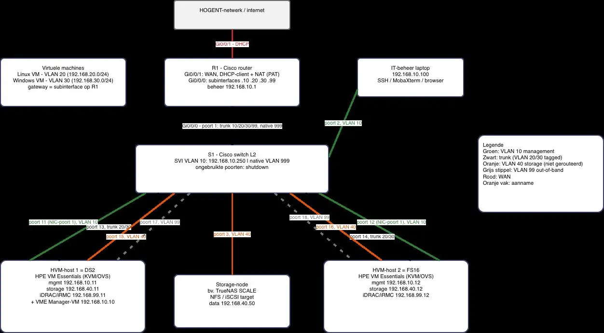
Router en switch
R1 doet router on a stick. Er zijn subinterfaces op Gi0/0/0 met 802.1Q en een trunk naar poort 1 van S1. Verder heeft R1 NAT, DHCP voor VLAN 20 en 30 en een ACL zodat VLAN 99 enkel bereikbaar is vanuit VLAN 10. SSH versie 2 staat aan op beide toestellen. De WAN krijgt R1 via DHCP van de muur. Daar is geen login voor nodig, al zocht ik eerst een inlogpagina.
De configuratie slaan we bewust niet op. S1 is ze dus kwijt na een herstart. Daarom staat alles in tekstbestanden.
In het begin liep dit mis. De fiche tekent G0/0 en G0/1, maar onze router heeft Gi0/0/0 en Gi0/0/1. We hielden de echte poorten aan. Op de console kreeg ik dubbele tekens, omdat er twee screen-sessies op dezelfde poort draaiden. Ik stopte ze allebei en startte er een nieuwe. Op S1 reageerde de console niet, omdat ik een gewone netwerkkabel gebruikte in plaats van de consolekabel.
Mijn Mac kreeg op de USB-adapter een 169.254-adres, waardoor ping een timeout gaf. Een vast IP loste dat op. SSH gaf nog no matching key exchange method found. De Mac is strenger dan de oude Cisco-software, dus gaf ik in het ssh-commando twee extra opties mee.
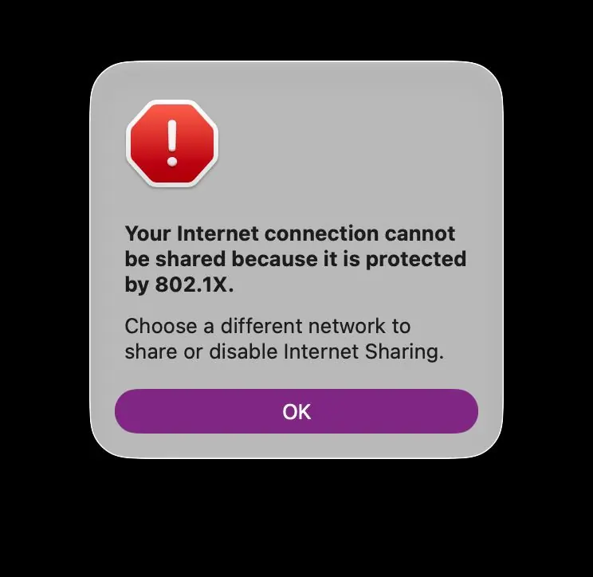
DS2, de Dell
De iDRAC van DS2 staat op 192.168.99.11 in VLAN 99. Eerst was hij niet bereikbaar. De kabel zat in een gewone netwerkpoort in plaats van in de iDRAC-poort. De logingegevens waren waarschijnlijk veranderd door vorige gebruikers.
Daarna vergeleek ik de firmware met de Dell-pagina voor deze server. BIOS 2.19.0 en de netwerkkaart waren al actueel. De iDRAC zette ik van 2.85 naar 2.86.86.86.
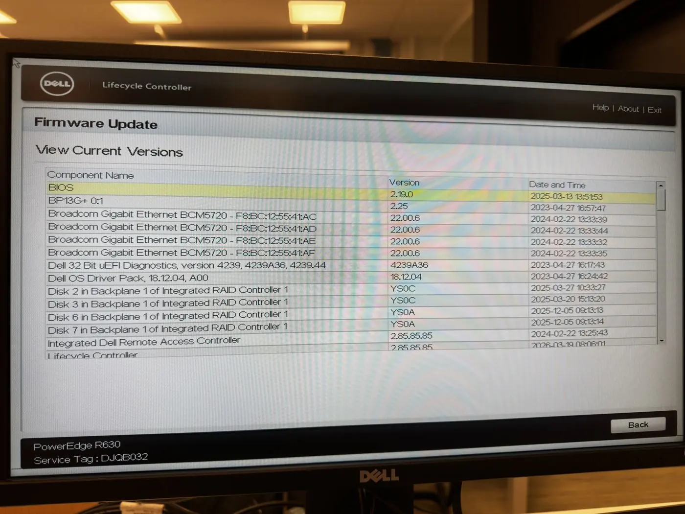
Voor de opslag maakten we een RAID 1 voor het besturingssysteem op twee schijven van 125 GB. Dan een RAID 10 voor data met vier schijven van 875 GB. Schijf 6 meldt predictive failure, dus die gebruiken we niet.
FS16 en de iRMC
Op FS16 verloor ik ongeveer drie uur aan de iRMC-login. Kanaal 1 gaf een fout bij ipmitool en bij de gebruiker admin stonden callin en link auth uit. Ik startte Ubuntu live van een Ventoy-stick, gebruikte kanaal 2 en zette de rechten aan. Daarna werkte inloggen enkel in Google Chrome. Achteraf hadden we de iRMC niet nodig voor de installatie.
Ik probeerde ook de installer via virtual media te laden over HTTP op poort 8000. Dat werkte niet. De oplossing was een USB-stick die ik met dd maakte.
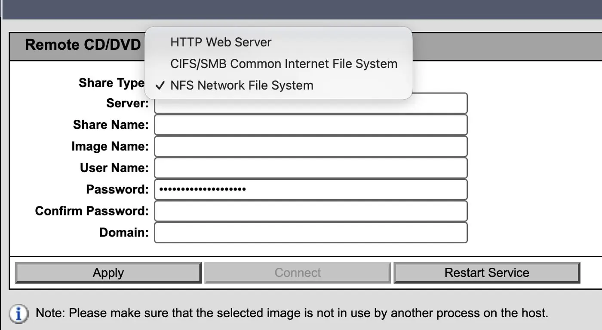
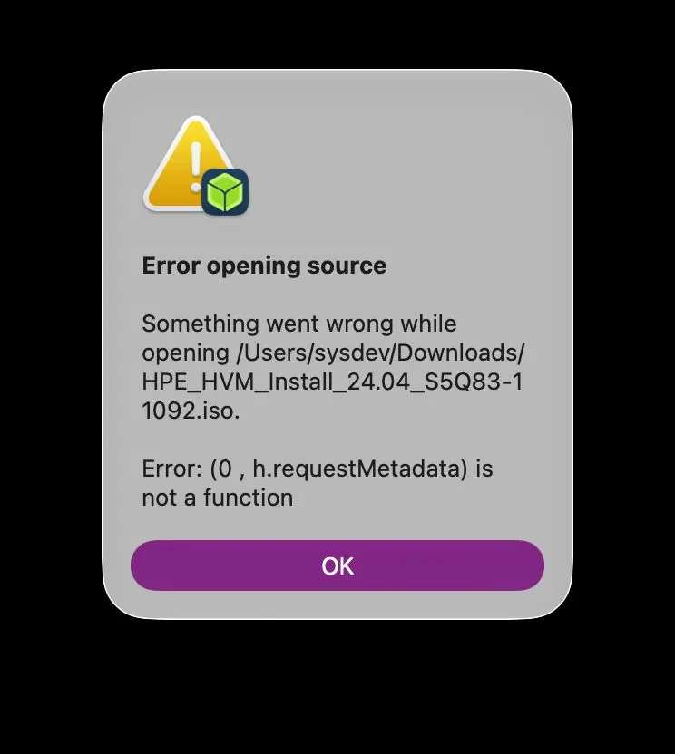
FS16 installeren op 15 oktober
Eerst moest de server van de USB-stick booten. In de BIOS zette ik de stick bovenaan de bootvolgorde. Booten in legacy gaf een zwart scherm, dus zette ik de CSM-optie op UEFI only.
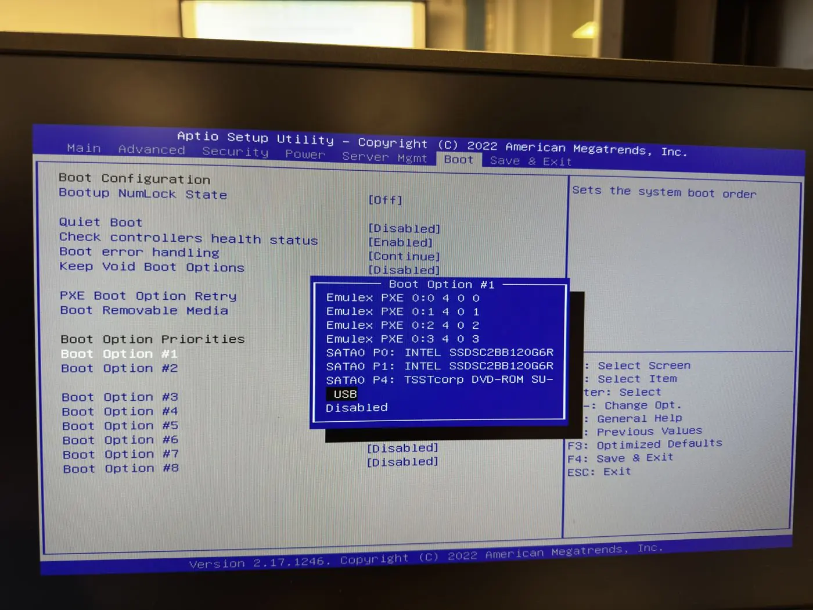
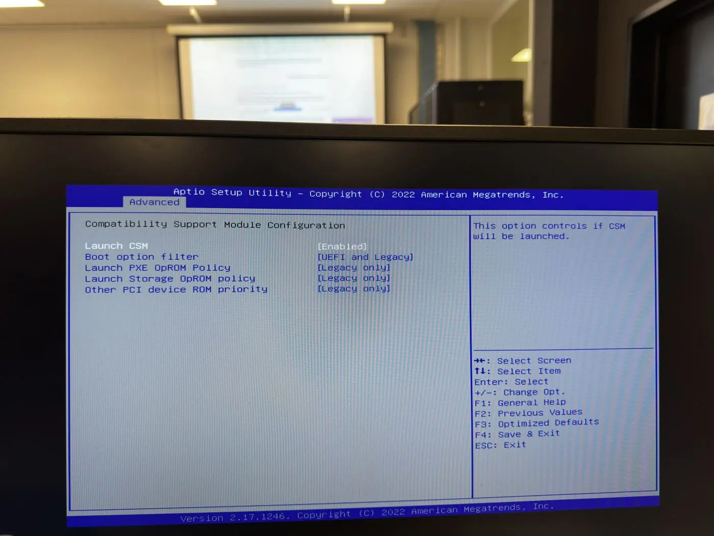
Dan crashte de installer. FS16 heeft enkel een onboard LSI software-RAID, geen hardware-RAID-kaart, en de installer heeft daar geen driver voor. Er stond nog een oude fakeRAID op de schijven als md126 en md127. De wipefs-opdracht faalde met device or resource busy.
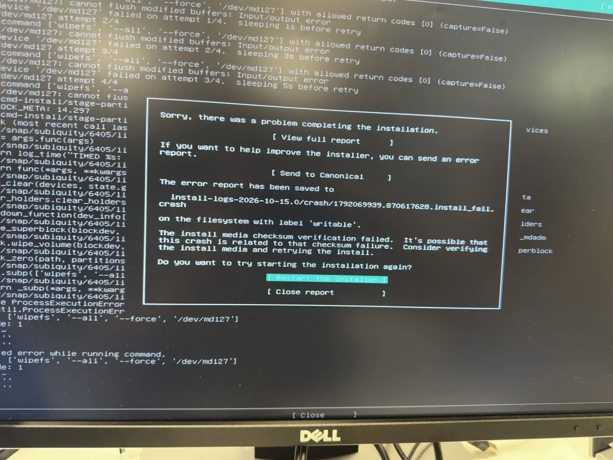
In de shell van de installer stopte ik eerst md126 en dan md127. Daarna wiste ik de superblocks van sda en sdb met mdadm en voerde ik wipefs opnieuw uit. In de BIOS zette ik SATA op AHCI. Toen lukte de installatie van Ubuntu 24.04.5 met de HPE HVM-installer 9.1.0.
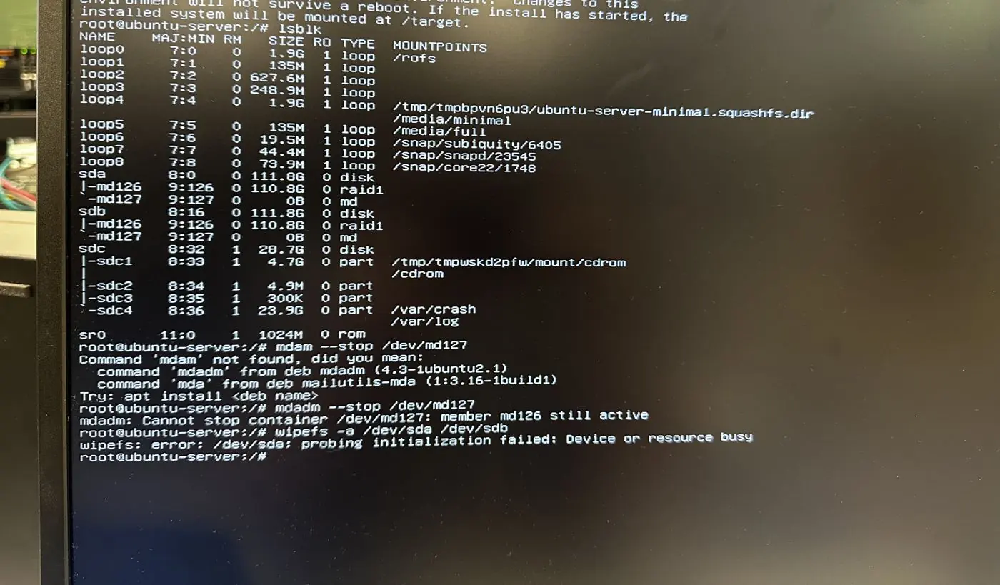
Netwerk op FS16
In het menu van de HPE VM Console gaf Configure Network enkel een lege Error. Het netwerk zette ik dan zelf in via netplan. Nano bestond niet, dus schreef ik het bestand met tee. Het eerste netplan apply faalde door een typfout in het commando. Daarna was het netwerk nog steeds unreachable, omdat alle poorten down waren.
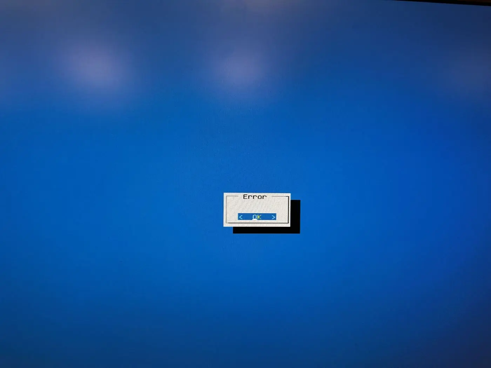
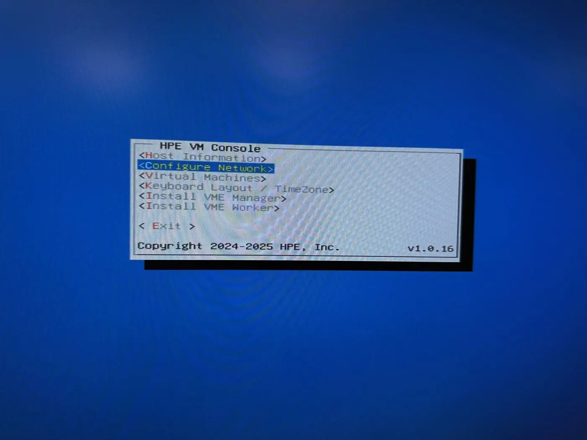
De beheerkabel zat in eno4 en niet in eno1. Ik zette de poorten aan met ip link set up en schakelde systemd-networkd in. Met networkctl zag ik welke poort leefde. Daarna pingde 192.168.10.12 wel naar de gateway.
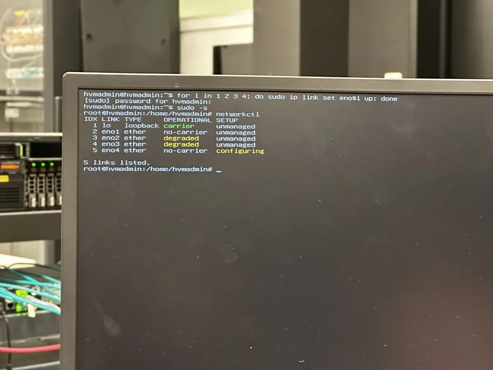
De VME Manager op DS2
Ons design noemt versie 9.0.2, maar het portaal toonde enkel 9.1.0. De 9.0.2 iso's stonden er niet meer. Beide hosts moeten dezelfde versie draaien, dus gebruiken we 9.1.0.
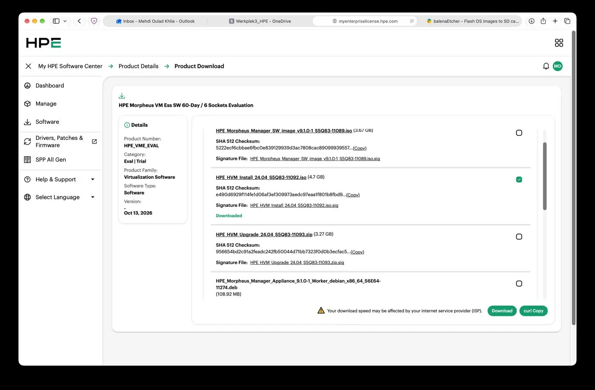
De Manager draait als VM op DS2 met de naam vmemanager op 192.168.10.10. Hij heeft 31 GB RAM en 98 GB schijf. De eerste start bleef hangen op Waiting for changelog lock. Ik gaf de DATABASECHANGELOGLOCK vrij in MySQL met de gebruiker morpheus. Root mocht niet in de database.
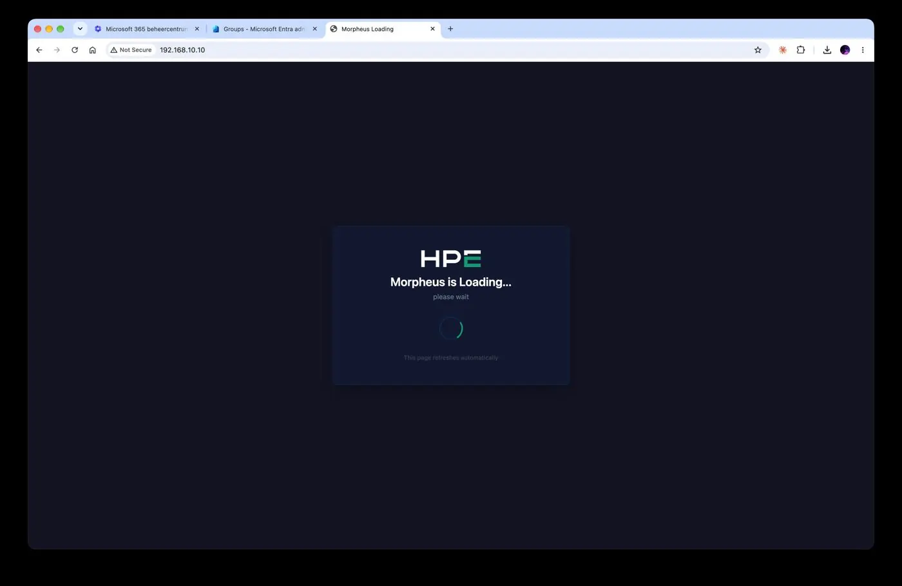
Daarna lukte de setup en loopt de trial van 60 dagen. In de GUI kreeg ik een foutmelding over removeChild. Dat kwam door de vertaalfunctie van Chrome. Ik vertaal de pagina dus niet.
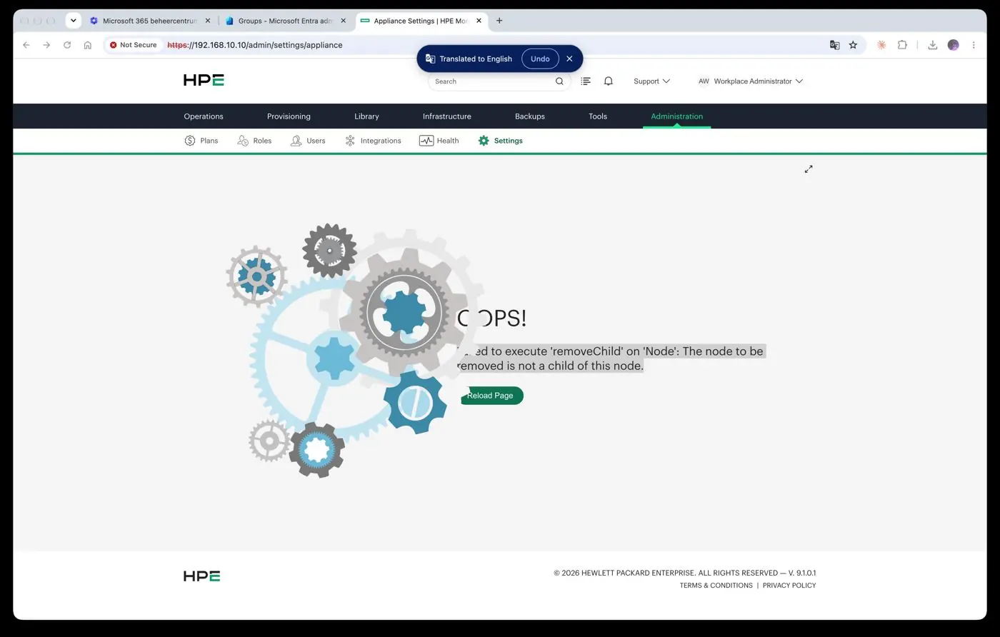
22 oktober: RAID, storage en cluster
FS16 kreeg software-RAID 1 zonder herinstallatie. De md0 loopt over sda2 en sdb2 en de EFI-partitie staat ook op sdb1. De bootvolgorde bevat beide schijven. De beheerkabel op Fa0/12 zat nog los. Daarna was alles up en werkte SSH vanaf mijn Mac.
De kabels van DS2 zijn omgekeerd ten opzichte van FS16. Bij DS2 zit storage op eno2 met 192.168.40.11, bij FS16 op eno3 met 192.168.40.12. Voor DS2 staat dat in 60-storage.yaml.
Voor de opslag wilden we TrueNAS, maar dat werkt niet op een pc met een schijf. De docent vroeg daarom Rocky Linux op de desktop en de schijf te delen via iSCSI. Met targetcli maakte ik een fileio-backstore van 300G en ACL's voor beide hosts. Beide hosts zien nu een schijf van 300G als sdc. Het design noemt nog NFS, dat wijkt dus af.
Dan het cluster. Ik koos layout HVM 1.3 op Ubuntu 24.04 met de VLAN's 20 en 30. De eerste poging gaf SSH Host IP cannot be blank, omdat het tweede hostveld leeg was. Met beide hosts ingevuld kreeg wp3-hvm-cluster status Ok met twee workers, FS16 en DS2.
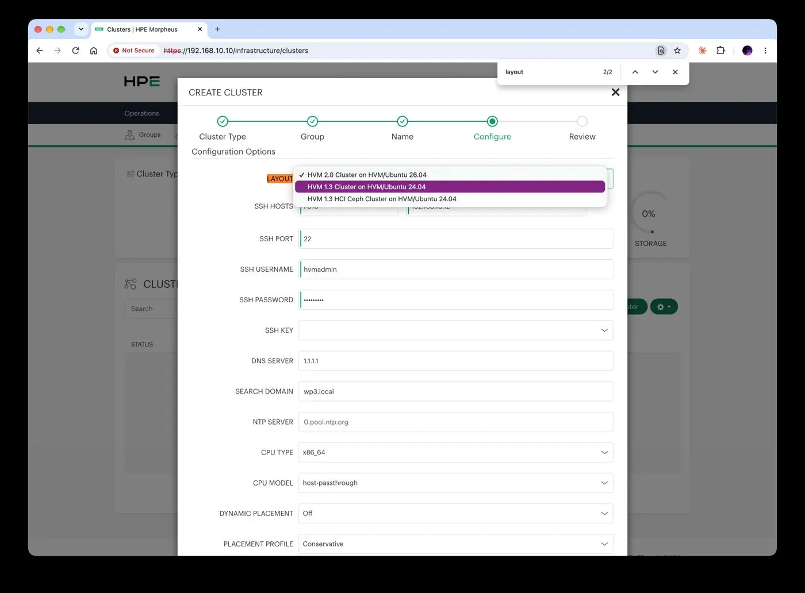
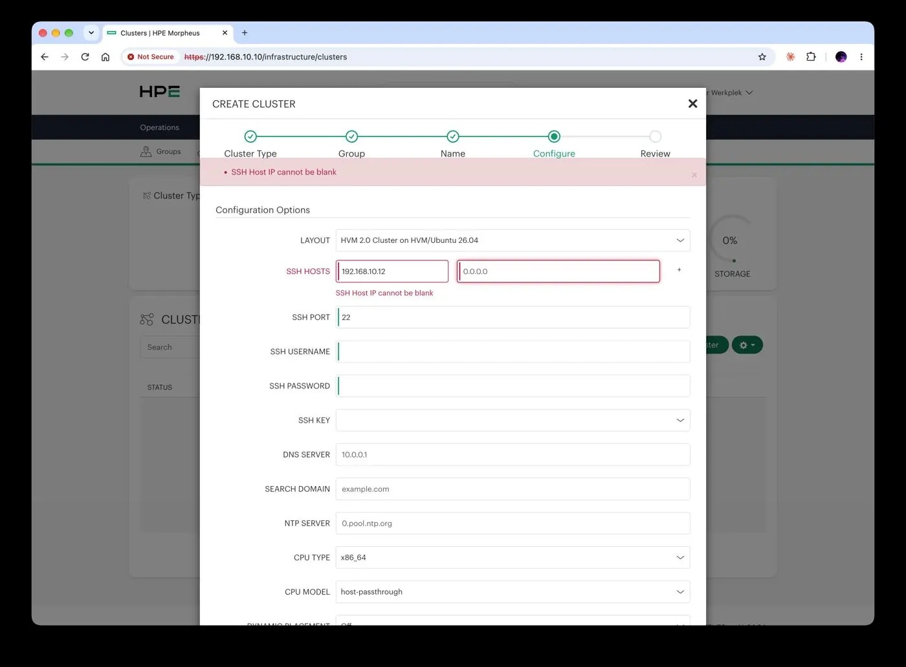
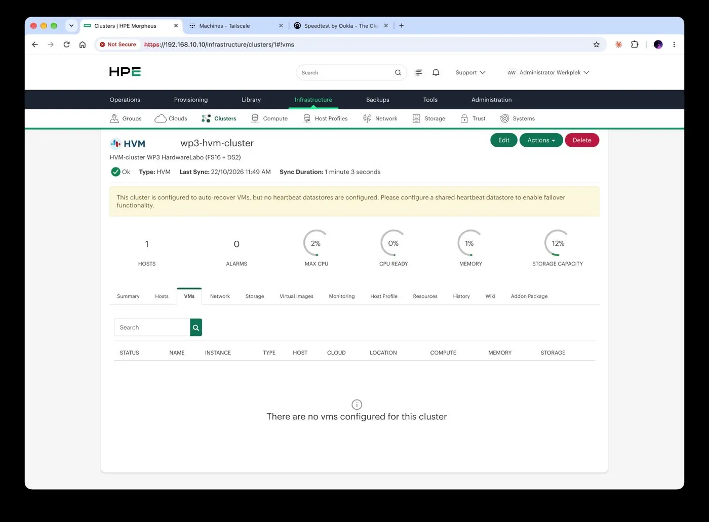
Problemen en oplossingen
| Probleem | Oorzaak | Oplossing |
|---|---|---|
| Dubbele tekens en een trage console op R1 en S1. | Twee screen-sessies op dezelfde poort. | Alle sessies stoppen en een nieuwe starten. |
| De console van S1 reageerde niet. | Een gewone netwerkkabel in plaats van de consolekabel. | Consolekabel in de Console-poort. |
| Ping naar R1 en S1 gaf een timeout. | De USB-adapter stond op DHCP en had 169.254.x.x. | Vast IP met de gateway van R1. |
SSH gaf no matching key exchange method found. | De Mac is strenger dan de oude Cisco-software. | Twee extra opties in het ssh-commando. |
| iRMC-login van FS16 lukte niet, ongeveer drie uur. | Kanaal 1 gaf een fout en callin en link auth stonden uit. | Kanaal 2, rechten aanzetten en Google Chrome gebruiken. |
| Installer laden via virtual media over HTTP. | Het werkte niet. | USB-stick met dd. |
| Zwart scherm bij het booten van de stick. | Legacy boot. | CSM op UEFI only. |
De installer crashte op wipefs van md127. | Oude fakeRAID van de onboard LSI-controller. | md126 en md127 stoppen, superblocks wissen en SATA op AHCI. |
| Configure Network gaf een lege Error. | Onbekend, de melding was leeg. | Het netwerk zelf instellen met netplan. |
| Netwerk unreachable op FS16. | Alle poorten down en de kabel zat in eno4. | ip link set up, systemd-networkd en de poort controleren met networkctl. |
De Manager bleef hangen op Waiting for changelog lock. | Een blijvende lock in de database. | DATABASECHANGELOGLOCK vrijgeven in MySQL. |
De GUI van de Manager brak met removeChild. | De vertaalfunctie van Chrome. | De pagina niet vertalen. |
| Design noemt 9.0.2 en het portaal had enkel 9.1.0. | De oudere iso's staan niet meer online. | Beide hosts op 9.1.0. |
| TrueNAS werkt niet op de desktop. | De desktop heeft maar een schijf. | Rocky Linux en iSCSI met targetcli. |
Cluster aanmaken gaf SSH Host IP cannot be blank. | Het tweede hostveld was leeg. | Beide hosts invullen. |
Nog te doen
Als volgende maak ik in de Manager een datastore als GFS2 op de schijf sdc. Die formatteer ik niet zelf. Daarna komen de Linux VM in VLAN 20 en de Windows VM in VLAN 30, en een live migratie tussen de twee hosts. Dan volgen het advies en de demo.